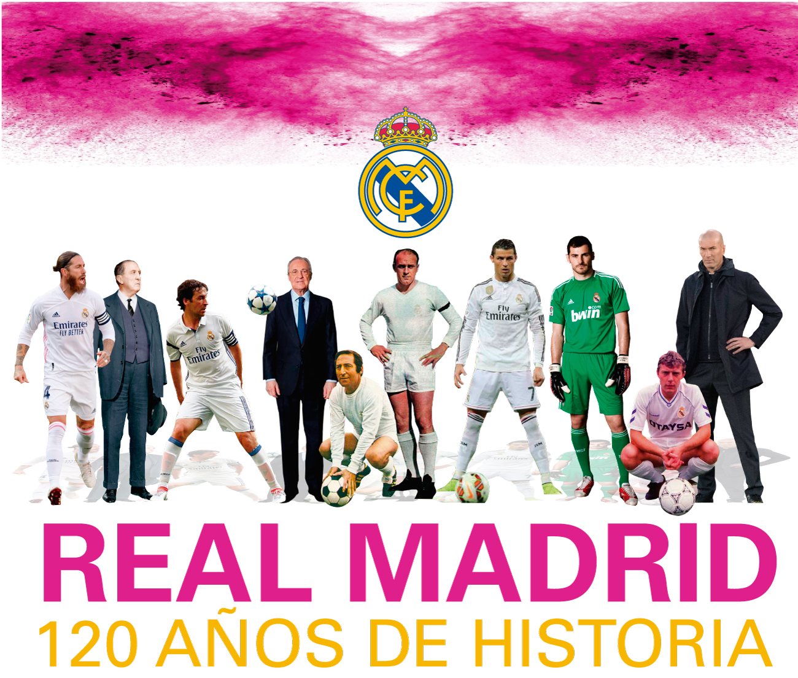
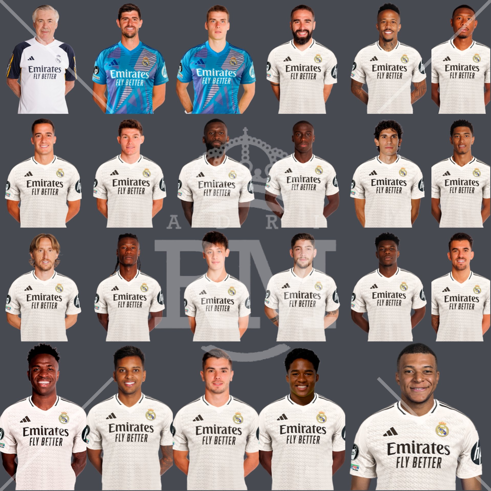
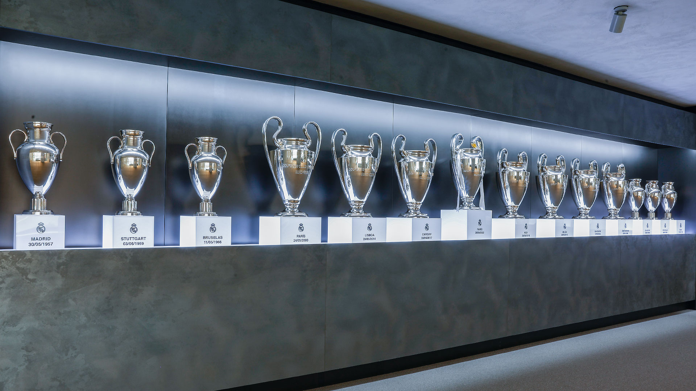
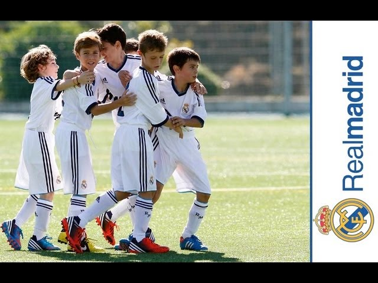

Historia del Club
El Real Madrid Club de Fútbol, fundado el 6 de marzo de 1902, ha sido un emblema del fútbol mundial desde sus inicios. Su historia está marcada por grandes éxitos, leyendas en el campo y una constante búsqueda de la excelencia. En sus primeros años, el club ayudó a popularizar el fútbol en España y comenzó a labrar su leyenda bajo el liderazgo de Santiago Bernabéu, quien presidió el club desde 1943 hasta 1978. Bajo su mandato, se construyó el estadio Santiago Bernabéu, inaugurado en 1947, y el equipo ganó las primeras cinco ediciones de la Copa de Europa entre 1956 y 1960, con estrellas como Alfredo Di Stéfano, Paco Gento y Ferenc Puskás.
Durante los años 80, el club continuó brillando gracias a la "Quinta del Buitre", un grupo de jugadores formados en la cantera encabezados por Emilio Butragueño, que llevó al equipo a conquistar numerosas Ligas. A finales de los 90 y principios de los 2000, llegó la era de los "Galácticos", con la llegada de figuras internacionales como Luis Figo, Zinédine Zidane, Ronaldo Nazário y David Beckham, que consolidaron al Real Madrid como una de las instituciones más reconocidas a nivel mundial, tanto dentro como fuera del terreno de juego.
El comienzo de la década de 2010 trajo una nueva etapa dorada al club. Bajo la dirección de entrenadores como José Mourinho y Zinédine Zidane, y con Cristiano Ronaldo como principal estrella, el Real Madrid conquistó cuatro títulos de la UEFA Champions League en cinco años (2014, 2016, 2017 y 2018). Con jugadores como Sergio Ramos, Luka Modrić y Karim Benzema, el equipo demostró un dominio casi total en Europa. En la temporada 2021/2022, con Carlo Ancelotti al mando, el Real Madrid volvió a la cima de Europa al vencer al Liverpool y conquistar su 14ª Champions League, reafirmando su supremacía.
La temporada 2023/2024 fue testigo de un nuevo logro épico en la historia del club, al alzarse con la 15ª Champions League, derrotando al Manchester City en una final emocionante disputada en Estambul. Vinícius Júnior y Rodrygo Goes fueron decisivos durante la campaña europea, mientras que el liderazgo de Karim Benzema y el trabajo en equipo de figuras emergentes como Jude Bellingham y Aurélien Tchouaméni ayudaron a consolidar el dominio del equipo en Europa. Con esta victoria, el Real Madrid se mantuvo como el equipo más exitoso en la historia de la competición, acumulando un récord que parece inalcanzable para otros clubes.
En el verano de 2024, el Real Madrid hizo historia nuevamente al fichar a Kylian Mbappé, considerado uno de los mejores futbolistas del mundo. Después de varios intentos en años anteriores, el club finalmente consiguió traer al jugador francés, quien llegó como la pieza clave para el proyecto futuro del equipo. Mbappé se unió a una plantilla que ya contaba con grandes nombres como Vinícius Júnior y Rodrygo, formando una línea ofensiva temida por los rivales. Con su velocidad, habilidad y capacidad goleadora, Mbappé ha aportado un nuevo nivel de dinamismo al ataque del equipo, haciendo que el Real Madrid sea aún más letal.
Jugadores Destacados
El Real Madrid ha sido el hogar de algunos de los futbolistas más legendarios de la historia. En las décadas de 1950 y 1960, Alfredo Di Stéfano fue la piedra angular del éxito del equipo, convirtiéndose en un símbolo del club y guiando al Real Madrid hacia cinco Copas de Europa consecutivas. En esa misma era, Ferenc Puskás y Paco Gento también dejaron una huella imborrable, siendo parte del equipo que dominó el fútbol europeo.
En los años 90, Raúl González Blanco emergió como un ícono del club, siendo el máximo goleador hasta ser superado por Cristiano Ronaldo. Raúl representó el espíritu del Real Madrid con su dedicación y liderazgo, mientras que Iker Casillas, quien debutó como portero en 1999, se convirtió en un ejemplo de constancia y talento, siendo crucial en la conquista de títulos nacionales e internacionales.
En la era moderna, Cristiano Ronaldo dejó una marca indeleble, anotando más de 450 goles y liderando al equipo hacia cuatro títulos de Champions League entre 2014 y 2018. Sergio Ramos, capitán y defensor central, fue otra figura crucial, destacando por su liderazgo y goles decisivos en momentos clave, como en la final de la Champions League de 2014. En la actualidad, jugadores como Luka Modrić, ganador del Balón de Oro 2018, Karim Benzema, quien ganó el Balón de Oro en 2022, y Vinícius Júnior, una de las grandes promesas del fútbol mundial, continúan escribiendo nuevas páginas de la historia del club en la temporada 2024/2025.
Trofeos y Logros
El Real Madrid es el club más laureado de la historia del fútbol europeo, y sus vitrinas así lo reflejan. Con 15 títulos de la UEFA Champions League, el equipo blanco ha consolidado su supremacía en Europa, siendo el equipo que más veces ha levantado el trofeo. Su dominio comenzó en la década de 1950, ganando las primeras cinco ediciones de la competición, y continuó en el siglo XXI, con títulos en 2014, 2016, 2017, 2018, 2022 y 2024.
En cuanto a competiciones nacionales, el Real Madrid ha ganado 35 títulos de La Liga hasta la temporada 2024/2025, destacando por su regularidad y competitividad en el fútbol español. La Copa del Rey, que el club ha ganado en 20 ocasiones, también forma parte de su impresionante palmarés, siendo la última victoria en 2023. Además, el Real Madrid ha demostrado ser un gigante en competiciones internacionales, conquistando 7 Mundiales de Clubes y 4 Supercopas de Europa, destacando como uno de los equipos más exitosos del planeta.
La hegemonía del Real Madrid también se extiende a la Supercopa de España, que ha ganado en numerosas ocasiones. El espíritu competitivo y la capacidad del equipo para rendir en los momentos clave son las razones detrás de estos logros. En la temporada 2024/2025, el club continúa compitiendo por todos los títulos, manteniendo su reputación de equipo grande y acostumbrado a las gestas históricas, siempre con el objetivo de seguir ampliando su glorioso palmarés.
Futuro del Equipo
El futuro del Real Madrid se vislumbra lleno de ambición y grandes expectativas. La dirección del club, encabezada por Florentino Pérez, ha invertido significativamente en la renovación del Estadio Santiago Bernabéu, que se convertirá en uno de los recintos más modernos e innovadores del mundo del fútbol. Este proyecto busca no solo mejorar la experiencia de los aficionados, sino también diversificar las fuentes de ingresos del club, asegurando su competitividad a largo plazo.
En el ámbito deportivo, el Real Madrid ha apostado por una combinación de jóvenes talentos y jugadores con experiencia para mantener su lugar en la élite. Vinícius Júnior y Rodrygo Goes se han establecido como jugadores fundamentales, aportando velocidad, creatividad y goles. Además, la llegada de Jude Bellingham en la temporada 2023/2024 ha reforzado el centro del campo, aportando calidad y juventud a la plantilla. Eduardo Camavinga y Aurélien Tchouaméni también forman parte de esta nueva generación de futbolistas que aseguran la competitividad del club en el futuro.
El equipo técnico, liderado actualmente por Carlo Ancelotti, ha sabido combinar la experiencia de jugadores veteranos como Luka Modrić y Toni Kroos con la energía y determinación de los más jóvenes. La cantera también juega un papel importante en la visión del futuro, con talentos emergentes que están siendo formados para dar el salto al primer equipo. Con estos elementos, el Real Madrid sigue preparándose para nuevos éxitos, comprometido a mantener su estatus como el club más importante del mundo y buscando continuamente mejorar, innovar y ganar en cada competencia que enfrenta.